智龙迷城急速阵型 使用技巧
Tips of Puzzle & Dragons Dash Formation
目录
Index
教程
Tutorials
-
选择你的语言（没有人帮忙，所以中文以外的都不保证翻译质量）
Choose your language(No one helps, so the quality of the translation is not guaranteed outside of Chinese)
-
选择你的游戏服务器。
Choose your Game server.
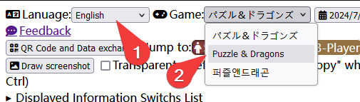
等待下载游戏数据，直到出现数据更新时间。
Wait for the game data to be downloaded until the data update time appears.
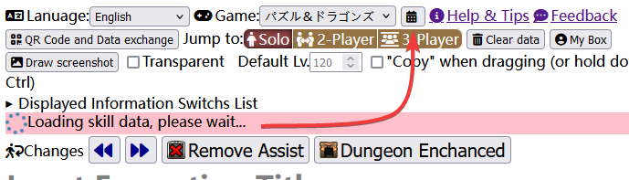
单击一个位置，进入这个位置的编辑窗口。
Click on a slot to go to the slot's editing window.
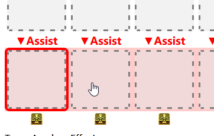
-
输入卡片 ID，跳转到对应的卡片。
Enter the card ID to jump to the corresponding card.
-
点击各处需要修改的地方，如果您玩过游戏，应该能很快理解。
Click on the places where you need to make changes, and if you've played the game, you should be able to understand it quickly.
-
点击完成，这个位置就编辑好了。
Click Done, and the slot will be edited.
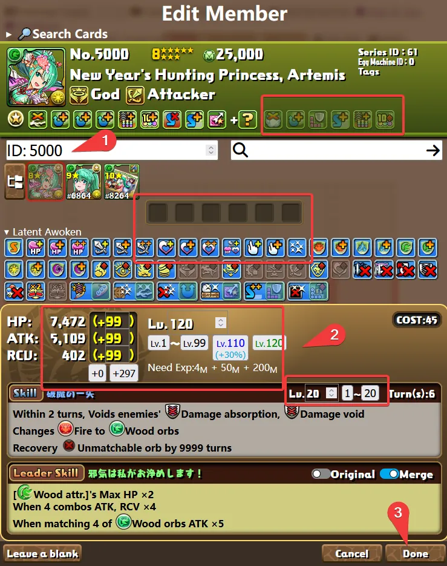
可以在编辑界面的文本搜索处输入怪物名称或标签来搜索卡片。
You can search for card by entering the Monster Name or Tags in the string search of the editing interface.
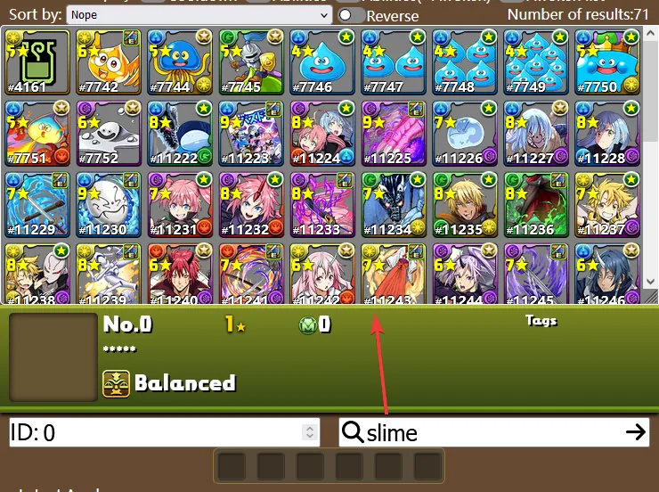
可以在特殊搜索处增加多个过滤器以进行组合搜索。
Multiple filters can be added to the special search for a combined search.
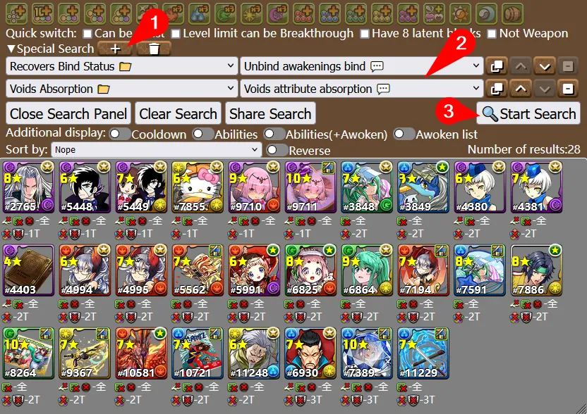
拖拽卡片头像即可快速交换位置，也支持手机触屏。
Drag card avatars to quickly swap member's positions, also supports mobile touch screen.
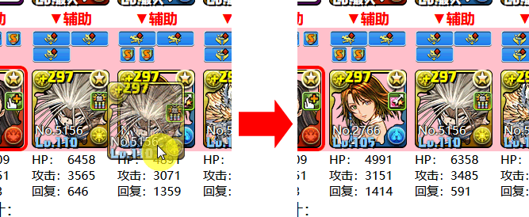
按住 Ctrl ，或手机上使用顶部的开关可以切换到复制模式。
Hold down Ctrl, or use the switch at the top on your phone to switch to copy mode.
分享
Share
通过网址分享和收藏队伍
Share and collect teams by URL
直接复制网址即可分享组队或自己添加收藏夹保存。
Copy the URL directly to share the Formation, or add a Bookmark to collect.
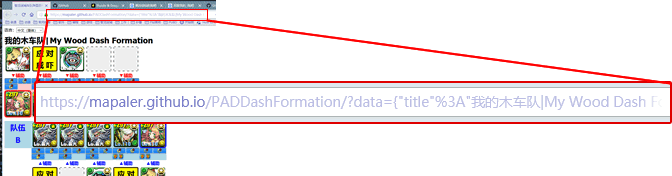
为了更方便的分享，你可以使用任意第三方短网址服务进一步缩短网址。
For easier sharing, you can further shorten your URL using any third-party Short URL Service. Like, bitly.
二维码分享
Share by QR Code
可以使用摄像头读取队伍二维码。
You can use the camera to read the Formation QR code.

读取到的队伍会显示为链接。
The read Formation appears as a link.
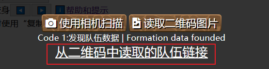
目前可以读取：
Currently can read:
-
PDC 的二维码
PDC format QR code
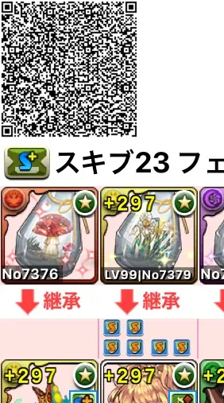
-
本程序自有格式的二维码
This program's own format QR code
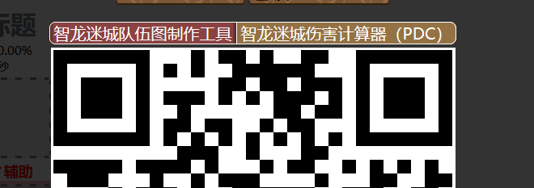
-
本程序网址链接的二维码
QR code of this program's URL

与 PADDB 进行数据交换
Data exchange with PADDB
由于 PADDB 跨域，您需要在用户脚本管理器内安装此辅助脚本以支持此功能。
Because PADDB is cross-domain, you need to install this helper script within the User Script Manager to support this feature.
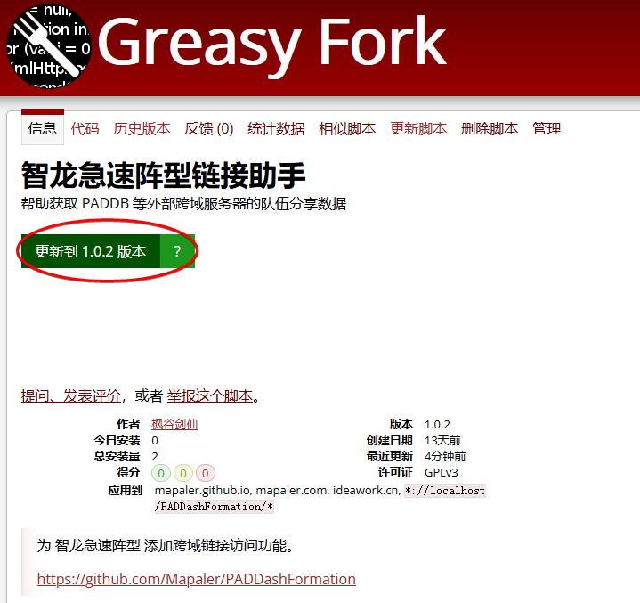
导入 PADDB 队伍
Import PADDB team
上传自己的队伍
Upload your own team
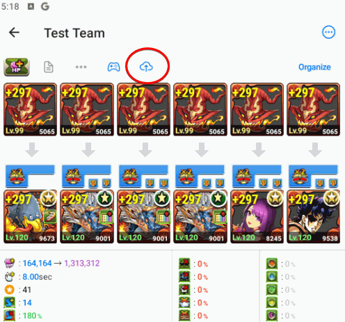
或者在队伍模板里搜索其他人的队伍
Or search for someone else's party in the Team Templates
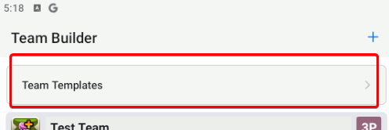
复制上传后的队伍链接
Copy the uploaded Team URL
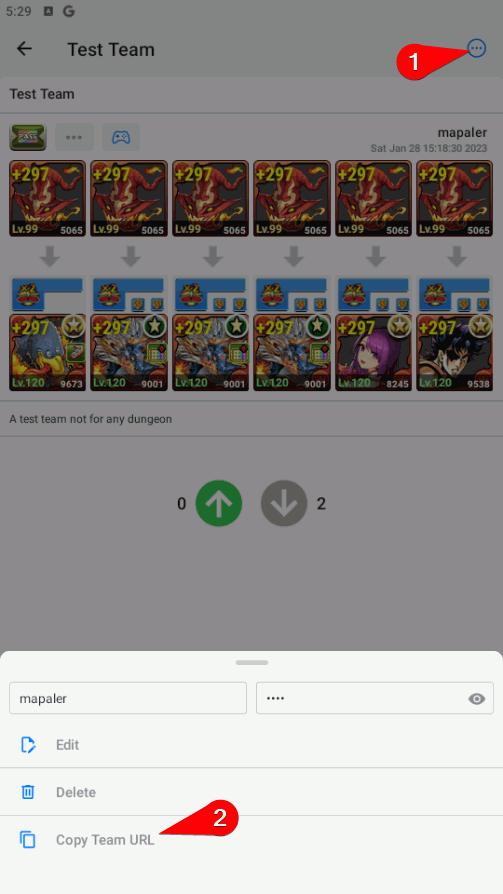
打开二维码与数据交换功能，粘贴队伍链接并读取
Turn on the QR code and Data Exchange feature, paste the team link and read it
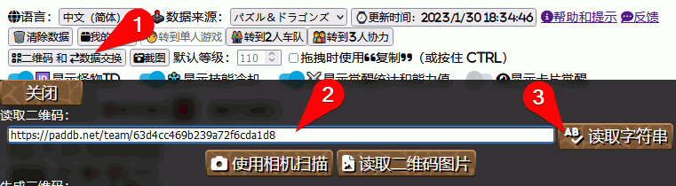
读取到的队伍会显示为链接
The read Formation appears as a link
将队伍上传到 PADDB
Upload the Team to PADDB
打开二维码与数据交换功能，在下方输入用户名与密码。
Turn on the QR code and Data Exchange feature, Enter your user ID and password below.

没有输入队伍链接时，将会上传队伍，并获得一个可被你的账号密码编辑的新的队伍链接。如果有，则会更新当前连接的队伍数据到你的链接。
If you do not enter a team link, the team will be uploaded and a new team link will be obtained that can be edited by your account password. If so, the currently team data is updated to the link.
你可以在队伍模板里看到你的队伍
You can see your team in the team template
或者通过浏览器打开队伍链接，也可以跳转到 PADDB 内（部分浏览器可能不支持）
Or open the team link in your phone browser, which will jump to PADDB (some browsers may not support it)
注意：
Note:
-
PADDB 目前只支持单人游戏队伍。
PADDB currently only supports solo team.
-
PADDB 不需要注册账号，填写任意的名称和密码即可。
用户名与密码没有唯一性，比如：账号: 枫谷剑仙，密码: 1234；账号: 枫谷剑仙，密码: abcd，都可以成功上传，但是两个队伍链接需要用不同的密码才能编辑。
注意密码是明文保存在 PADDB 服务器上，不要使用自己其他账号的密码。
PADDB does not need to pre-register an account, just use any ID and password.
ID and passwords are not unique, for example: ID: mapaler, PASS: 1234; ID: mapaler, PASS: abcd,both can be successfully uploaded, but the two team links need different passwords to edit.
Note that the password is stored in plaintext on the PADDB server, do not use the password of your other account.
-
没有正确的用户名和密码你无法修改 PADDB 上其他用户的队伍，但是可以导入本程序后全新上传为自己的并修改。
You cannot modify another user's team on PADDB without the correct ID and password, but you can import to this program and upload as your own and modify them.
编辑技巧
Editing tips
-
使用后退
Alt + ← 即可撤销上一次修改，需要重做则使用前进 Alt + →。
Use Back Alt + ← to undo the last edit, redo with Forward Alt + →.
-
如果你希望使用技能切换队长，使用切换按钮。这样可以保留原始队长强调边框，和 76板面 图标。
If you want switch leader by skill, use the switch button. This preserves the original leader accent border, and the 76 board icon.

-
使用
Ctrl + ←/→，或小键盘上的←/→(需关闭NumLock)可以快速切换变身。
You can using Ctrl + ←/→ or ←/→ on keypad (turn NumLock off) to quickly change Henshin.


-
使用
Ctrl + S，可以快速打开/关闭搜索框。
You can using Ctrl + S to fast open/close search box.
搜索图鉴
Search cards
-
使用空格可以分隔多个关键词。
Use spaces to separate multiple keywords.
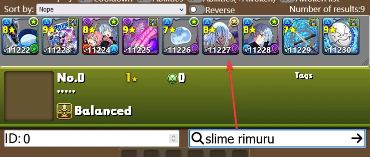
两个半角引号"括起来时，中间的关键词可以包含空格，如"rimuru tempest"。
When two half-width quotation marks " are enclosed, the keyword in the middle can contain spaces, such as "rimuru tempest".
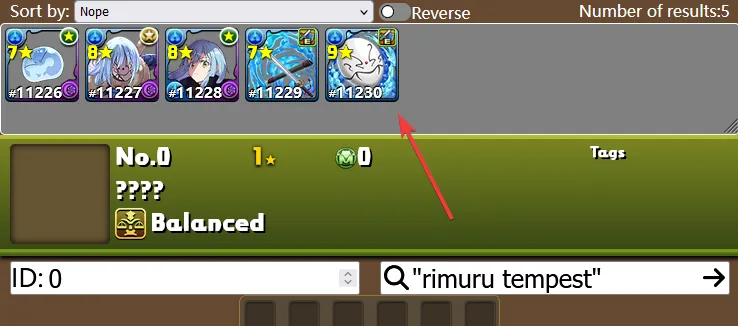
-
点击技能名称，可搜索相同主动技能宠物
Click on Skill Name to search for the same active skills Cards.
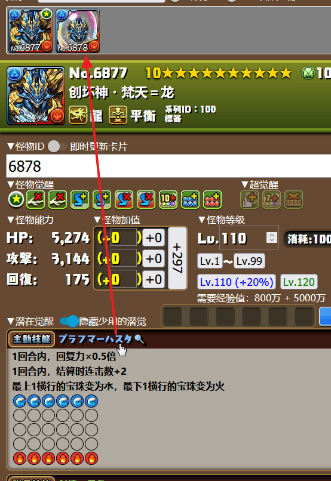
-
点击系列ID或标签，可搜索该系列
Click the Series ID or Tags to search for series.
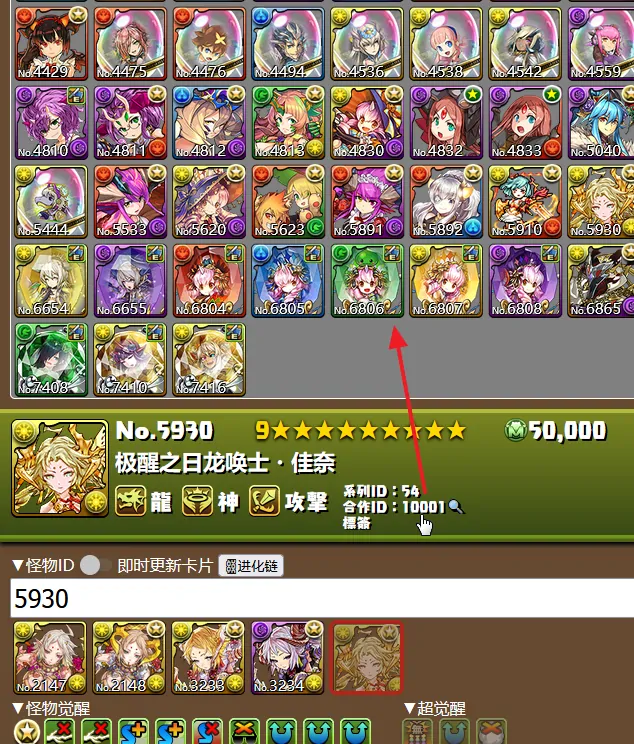
-
复制标签，可在游戏中以名称搜索该系列（不包含其他语言的标签）
Copy Tags to search for the series by name in-game (without Tags in Other Languages)

-
点击编辑界面的卡片头像可以跳转到预定义的攻略网站。
Click on the card avatar on the editing interface to jump to a predefined guide website.

在队伍界面和搜索结果的怪物头像上，点击鼠标中键也可以跳转到攻略网站。在手机上则是长按怪物头像然后选择在新标签页打开。
Or click the middle mouse button on the monster avatar of the formation interface and search results to jump to the Guide. On your phone, you're long-pressing the monster avatar and then selecting to open it in a new tab.
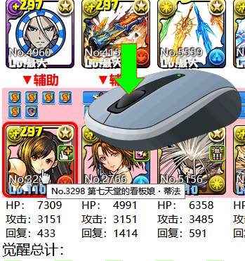
绑定箱子
Bind Box
如果你使用我的箱子功能打开你的游戏数据，你将会获得如下功能。
If you use the My Box feature to open your game data, you will get the following features.
-
读取你游戏里面的队伍配置。
Read the team composition in your game.
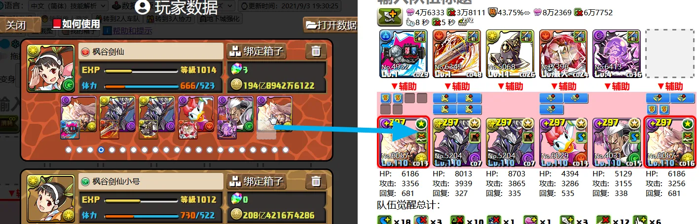
-
绑定箱子后，搜索时可以显示箱子内的角色个数。
显示规则是
With bind the box, you can display the number of cards in the box when searching.
The number rule is
×<相同IDidentical ID>(<进化链其他other in evolutionary tree>)
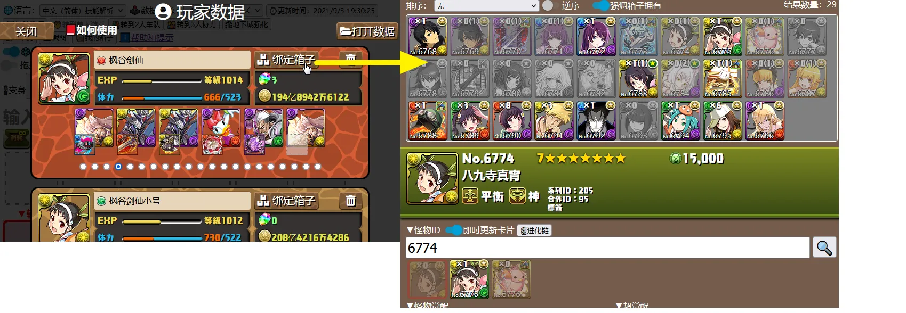
-
把你的游戏数据发给大佬，让他帮你组队。这样不会有帐号泄露风险。
Send your data to an expert and ask him to help team up so there is no risk of your account being stolen.
如何得到我的游戏数据？
How to get my Game Data?
你保存的数据全部存于浏览器的本地 IndexedDB 内，不会被上传到服务器，因此更换浏览器就需要重新打开数据。
All of the data you save is stored in your browser's local IndexedDB and will not be uploaded to the server, so changing your browser will require you to reopen the data.
文字的高级功能
Advanced of text detail
目前您可以直接使用富文本编辑功能编辑队伍介绍。
由于我只是业余开发者，会有很多BUG，您可以随时切换到代码模式进行更详细的编辑。
Currently, you can edit your team descriptions directly using the rich text editing feature.
Since I'm just an amateur developer, there will be a lot of bugs, and you can always switch to code mode for more detailed editing.
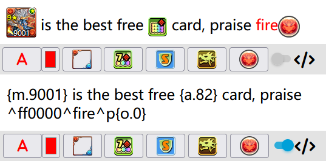
其他
Others
-
点击语音觉醒可以试听技能语音。
Click Voice Awakening to try out skill voice.

-
2人只显示部分共用的觉醒的统计（不包括超觉醒），单人和三人则全部显示。
The 2P Multi Games Mode shows only several common awoken statistics (excluding super-awakening), but the Solo and 3P Mode shows all.
-
内建的截图按钮依靠 html2canvas，会有一些绘制错误，浏览器的截图扩展能够更加还原显示的真实样子。
Built-in screenshot button relies on html2canvas, there will be some drawing errors, browser screenshot extension can be more restore the real appearance of the display.
-
如果你只是希望将本程序当作简单图鉴使用，可以在参数里加上
guide=1，如https://mapaler.gitee.io/paddashformation/solo.html?guide=1。
图鉴模式下进入网页时，会直接打开怪物修改界面，并且背景不透明。
If you just want to use this program as a simple guide, you can add guide=1 to the parameters, such as https://mapaler.github.io/PADDashFormation/solo.html?guide=1.
When you enter the page in guide mode, the monster modification interface opens directly and the background is opaque.
报告BUG
Report BUG
如果发现 BUG，请先按 Ctrl+F5 强制刷新，并点击数据更新时间按钮强制更新数据。
如仍存在问题可以在 Github Issues 报告。
If a BUG is found, first test again after force refresh by Ctrl-F5, then click the Data Update Time button to force update the data.
If there is still a problem, you can report it at the Github Issues.
程序源代码
Source Code
你可以在 GitHub 找到源代码。
You can find the source code at GitHub.